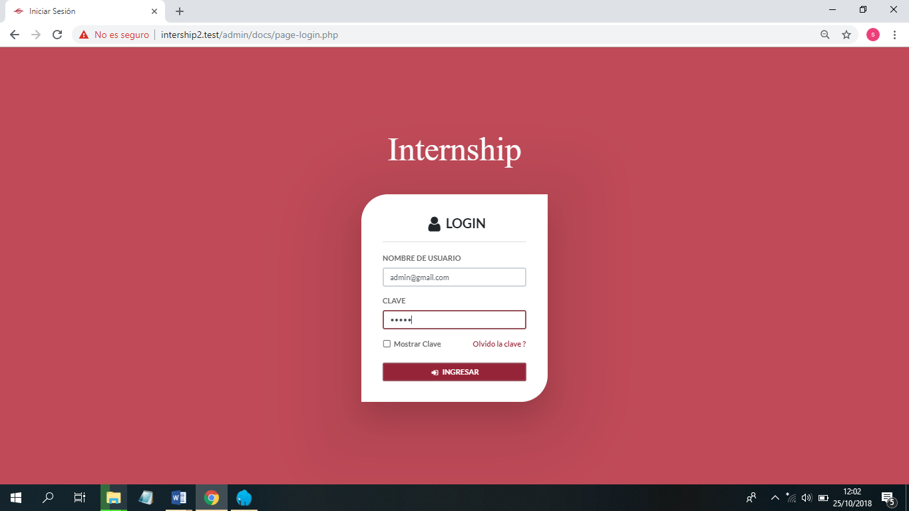
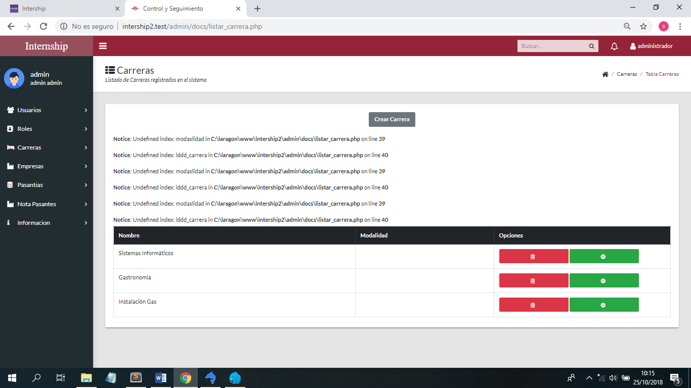

Tabla de contenido
El software INTERNSHIP ofrece un mejor manejo optimo (rapides y control) muy rápido, multiusuario. INTERNSHIP está diseñado para acortar tiempo y mejor control, así como para la integración en software de implementación masiva. INTERNSHIP es un sitema creado, y no será utilizada por el Cliente sin la autorización.
El software INTERNSHIP tiene lo sigueinte. Los usuarios pueden elegir usar el software INTERNSHIP como un producto de código abierto según los términos
La siguiente lista describe algunas secciones de particular interés en este manual:
Para una discusión de las capacidades del sistema INTERNSHIP, vea la Sección 1.2.2, "Las características principales de INTERNSHIP".
Para obtener mas informacion sobre la historia de internship consulte el capitulo 1.2.3 "historia de INTERNSHIP". Para saber sobre su creacion y detalles de la creacion.
Para saber que es el sistema INTERNSHIP y cuales son sus objetivos y del software consulte el capitulo 1.2.1
Para obtener información sobre la seguridad en INTERNSHIP, consulte Capitulo 6, Seguridad.
Para obtener información sobre como reportar errores del software cconsulte el capitulo 1.3
Para obtener información sobre los integrantes que lograron realizar el manual y el software consulte el capitulo 1.4.1
Para obtener respuestas a una serie de preguntas que se hacen a menudo con respecto al sistema INTERNSHIP de que se utilizo para la creación consulte el capitulo 1.4.2
Para obtener un historial de a quien va dirigido y diseñado el software INTERNSHIP con todos los agradecimientos consulte al capitulo 1.4.3
Para informar problemas o errores, siga las instrucciones del
capitulo 1.3, “Cómo informar errores o problemas”. Si encuentra un error de seguridad en INTERNSHIP, háganoslo saber de inmediato enviando un mensaje de correo electrónico a <vanesaFlores@gmail.com>.
Este es el Manual de referencia,
para el manejo y manipulacion del sistema INTERNSHIP.
El manual no está diseñado para otro sistema que no seas de pasantias. Si está utilizando otro sistema, verifique que tipo de sistema usa.
Debido a que este manual sirve como referencia, proporciona instrucciones generales sobre el manejo del sistema. no proporciona instrucciones generales sobre la reparación o instalado del sistema.
La estructura del Manual de referencia están escritos en formato HTML. La versión HTML y otros formatos se realizaron manualmente a exepción del framework de Boostrap. Si tiene preguntas sobre el uso de INTERNSHIP, puede hacerlas a través de nuestras listas de correo o foros. “Lista de correos INTERNSHIP”. Este manual fue realizado y diseñado por los estudiantes de tercer año “INTERNSHIP”. El equipo de documentación de INTERNSHIP, compuesto por
INTERNSHIP, es un Sistema de Seguimiento de Pasantia, esta desarrollado, distribuido y respaldado por los estudiantes de la carrera de sistemas informaticos tercer año.
Un control es una inspección que realiza como comprobante si toda la documentacio, requisitos estan al dia como tambien para la optencion de carta de pasantia.
Seguimiento al estudiante, relizara comprobantes de que el estudiante esta cumpliando con sus pasantias correctamente. Culminacion de la pasantia con las horas correctas indicadas en la carta de toma de pasantia.
Constancia y respaldo significa que tendrá un sertificado virtual que de el comprobante, se escaneara el certificado del estudiante por culminar la pasantia y lo guardara como respaldo. Se mostrara un reporte general de todo los requisitos y documento adquiridos si faltara un requisito o documento el reporte lo dira.
Si eso es lo que estas buscando, este programa puede ejecutarse comodamente en una computadora de escritorio o portatil.
INTERNSHIP se desarrolló originalmente para optimizar el trabajo, mejora el tiempo de busqueda de ducumentos del estudiante para la revicion y reporte.
Esta sección describe algunas de las características importantes del software INTERNSHIP. En la mayoría de los aspectos, se aplica a los veneficios del usuario. para mayor informacion lea todo el manual de usuario adecuado del sistema.
Le da la facilidad de tener un buscador segun el apellido los documentos, referente a los documentos del estudiante.
Ttendra la opcion de otorgar cargos a los demas trabajadores del area de pasantia.
Realizara un control y seguimiento de como va las horas y dias que el estudiante realiza, tambien realiza un control sobre las documentaciones en que estado estan si puede tomar la pasantia o no.
El sistema, diseñado para el usuario segun a su comodidad y entendimiento con graficas mas detalladas para que se guie mejor en cada ejecución.
Comenso los problemas relacionados con control y seguimiento de la documentación de pasantías, con la mayoría de las carreras de nuestra institución, han causado conflictos en los trámites y solicitud de información de estudiantes egresados o en proceso de pasantía. Algunos problemas son la presentación de documentación de pasantías, pérdida de documentación de pasantías realizadas durante el periodo de la carrera, errores en la documentación presentada entre otros.
Después de haber realizado un análisis de la toma de datos con cuestionarios y entrevistas al personal de la institución involucrado con las pasantías, se pudo evidenciar los siguientes problemas:
La supervisión de la pasantía no lleva un seguimiento formal, en ocasiones el docente o tutor no procede con las inspecciones que se deberían realizar en la empresa que está realizando el pasante. Esto como resultado llego Desarrollar un sistema de gestión para el control y seguimiento de pasantías. Este sistema fue diseñado para permitir q no ocurra los problemas de control con la documentacion y ser portador de facil manejo para el usuario.
INTERNSHIP es originario de pasantia traducido al ingles.
El nombre de INTERNSHIP fue elegido de una gran lista de nombres sugeridos por los integrantes del grupo de trabajo y confirmado por el usuario. INTERNSHIP fue el nombre ganador, este nombre INTERNSHIP qu significa "pasantia".
El logo de INTERNSHIP tambien fue elegido de una gran lista de logos sugeridos por los integrantes del grupo de trabajo y aceptado por el usuario. Este logotipo fue el ganador despues de muchas reuniones y debates del significado q representa.
El significado del ojo con una mirada ceria representa el control estricto de todo tramite y seguimiento q de ara en este sistema.
Antes de publicar un informe de error sobre un problema, intente verificar que se trata de un error y que aún no se ha informado:
Comiense por consultar el manual tecnico, para determinar si existe errores ya con soluciones o son errores nuevos q no han sido detectados.
Realice un analisis del error, si es del software o del hardware.
Si es problema del software, se cuelga reinicie la todo el computador reporte como problemas de interacción. 
si el problema es referente al software, reportelo como falla de compilacion. 
Las siguientes secciones enumeran a los desarrolladores, colaboradores que han ayudado a hacer de INTERNSHIP lo que es hoy.
Las siguientes personas nos han ayudado a escribir la documentación de INTERNSHIP.
Vanesa Flores
Ayuda continua para hacer este manual correcto y comprensible.
Juan Roque Mercado
Ayudó a reescribir los primeros y segundos intentos.
Rafael Merida
Ayudo a transcribir y revisar la ortografia del manual
Jhonas thames
Testeo del manual para no tener errores.
Ivan Quispe
Proporcionador de informacion.
Roy Franco
ayudo en la optencion de informacion y verificacion del contenido del manual.
Josue Verastegui
Ayudo en la transcripción del manual y verificacion de la ortografia.
La siguiente es una lista de las herramientas que hemos utilizado para crear INTERNSHIP. Usamos esto para expresar nuestro agradecimiento ha aquellos que los han creado, ya que sin ellos no podríamos haber hecho de INTERNSHIP lo que es hoy.
Laragon Wamp
Visio 2013
SQLyog
Sublime txt3 v3.1.1
Adobe Photoshop CS6
MYSQL Workbench
Navegador Google Chrome
Phpstorm Ide.
Dia v0.97.2
Si bien INFOCAL y/o sus filiales son propietarias de todo los derechos de autor, deseamos reconocer. Los siguientes estudiantes, que nos ayudaron en el desarrollo del sistema, como pagándonos por Desarrollando una nueva característica o dándonos hardware para el desarrollo de la institucion INFOCAL.